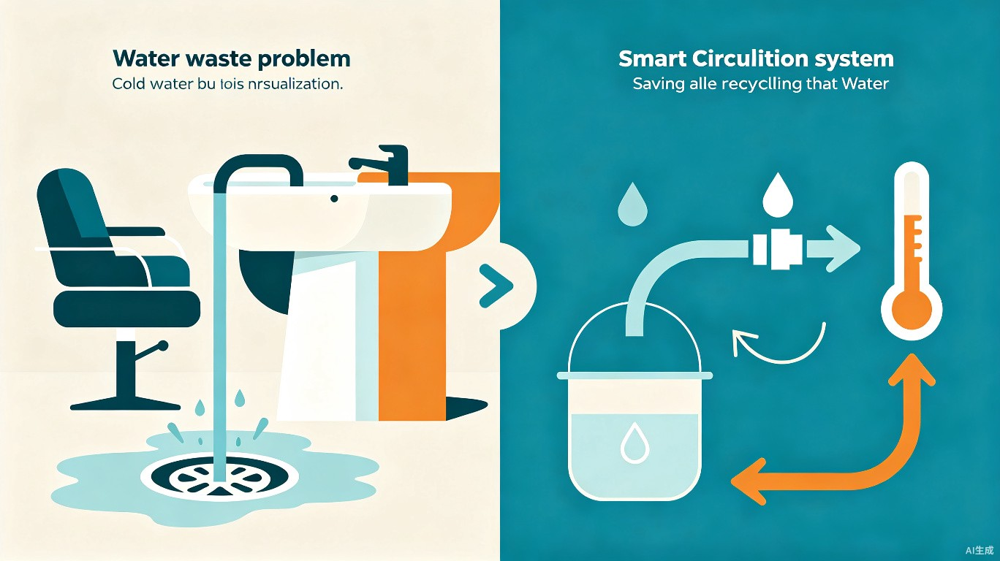

被忽视的浪费
每次洗头前的"放冷水"环节，是一个真实存在却从未被解决的水资源浪费场景
水资源浪费
每次洗头前需放掉 1~3 升冷水，直接排入下水道，全国 50 万+ 家理发店日浪费量惊人
能源浪费
被加热但未使用的热水流走，意味着燃气/电力的双重浪费，能源利用率极低
经营成本上升
水费 + 燃气/电费持续增加，中小理发店经营者对此缺乏感知和解决手段
顾客体验差
冬天等待热水时间长，冷水浇在顾客头上，严重影响服务体验和满意度

创新方案：零冷水循环技术
独创的"使用前小循环"概念，将等待阶段的冷水回流再加热，温度达标后无缝切换直通供水
现有方案 A
CN200510096371现有方案 B
CN201420745531本方案：零冷水循环
首创概念系统工作流程
顾客就位，系统启动
循环电磁阀 V1 开启，直通阀 V2 关闭，微型循环泵开始运行
水温上升阶段
恒温混水阀按比例混合冷热水，温度传感器 T1 实时监测，未达标则继续循环
温度达标，渐进切换
T1 检测水温达标，V1 渐关、V2 渐开（3~5秒），缓存水箱补偿冷水段
无缝直通供水
循环泵停止，热水直达喷头，全程顾客零感知，开始舒适洗头
洗头结束，自动复位
系统自动复位待机，等待下一位顾客
硬件架构图
flowchart TB
subgraph 零冷水循环模块
MV[恒温混水阀
冷/热自动比例混合] --> T1[温度传感器 T1]
T1 --> |未达标| V1[循环电磁阀 V1]
T1 --> |达标| V2[直通电磁阀 V2]
V1 --> P1[微型静音循环泵]
P1 --> TANK[缓存保温水箱
0.8L]
TANK --> |回流| MV
V2 --> HEAD[洗头喷头]
end
COLD[冷水进水] --> MV
HOT[热水进水] --> MV
AI 智能增强
硬件 + AI 软件的深度融合，用数据驱动节水，让环保看得见
智能预热预测
AI 根据门店历史数据、季节、时段预测客流量和最优预热时间，提前启动循环预热。顾客落座即可洗头，进一步减少等待时间。
节水数据看板
Web 端实时展示累计节水量、费用节省、碳排放减少量，店主直观看到投入产出比，数据驱动运营决策。
顾客扫码互动
顾客洗完头后扫码查看本次节约了多少水、减碳量，可分享到社交平台，将环保从口号变成可感知的互动体验。
设备健康监测
ESP32 + IoT 云端连接，实时监测设备运行状态，异常预警推送，远程参数调整，降低运维成本。
碳减排报告
自动生成月度/年度碳减排报告，支持导出，可用于门店 ESG 宣传和品牌社会责任展示。
SaaS 管理后台
连锁品牌可集中管理多门店节水设备，查看各门店数据排名，标准化运营和环保指标考核。
技术可行性与成本
所有核心部件均有成熟商用产品，整机 BOM 成本可控
| 部件 | 选型建议 | 参考价格 | 备注 |
|---|---|---|---|
| 恒温混水阀 | 市面成熟产品（摩恩、汉斯格雅恒温阀芯） | 80~200 元 | 核心部件，冷热水自动比例混合 |
| 微型循环泵 | 12V/24V 直流静音泵，3~5L/min | 30~80 元 | 需静音（<30dB），理发店环境要求高 |
| 温度传感器 | NTC / DS18B20 | 5~15 元 | 出水口前 10cm 安装 |
| 电磁阀 x2 | 不锈钢常开/常闭各一 | 20~50 元/个 | 一开一关配合切换 |
| ESP32 控制器 | ESP32-DevKit + 继电器模块 | 15~40 元 | WiFi/BLE 双模，连接云端 |
| 缓存水箱 | 0.8L 保温不锈钢小罐 | 20~40 元 | 解决切换瞬间温度波动 |
| 整机 BOM 合计 | 约 200~450 元 | 批量生产可进一步降低 |
设计难点解决方案：双阀渐进切换 + 缓存补偿
核心问题：循环水达标后切换直通进水，管道中残留的冷水段会导致温度骤降。
- 渐进切换：V1/V2 双阀在 3~5 秒内逐步开/关，而非突然切换
- 缓存补偿：0.8L 保温水箱在循环阶段蓄热，切换后热水逐步"推"出冷水段
- 恒温混水阀：持续按正确比例混合冷热水，确保出水温度恒定
效果：顾客全程无感知，温度波动控制在 ±1°C 以内。
社会价值与商业价值
兼具公益温度与商业可行性，响应国家节水行动和双碳目标
全国推广节水潜力
按全国 50 万家理发店、每店 1 个工位、日客流 30 人、单次节水 2L 估算：
- 年节水总量：约 1,095 万吨（相当于一个中型水库蓄水量）
- 年减少碳排放：约 5,475 吨 CO2（水处理和加热环节）
- 年节省经营成本：每店约 400~660 元（水费+燃气费）
- 设备回本周期：约 1~2 年
开发计划
用 TRAE IDE + TRAE Work 全流程开发，AI 辅助高效产出
创意提案 + Demo 原型
TRAE Work 梳理创意文档；TRAE IDE 搭建 ESP32 硬件控制模拟原型 + 节水数据看板 Web Demo（React + Node.js）；生成系统架构可视化页面和节水数据模拟动画
完整产品开发
硬件模块实物制作与组装；ESP32 固件 + 云端通信联调；Web 看板 + 顾客扫码互动页 + 店主管理后台；实测节水数据报告和碳减排分析
现场路演与答辩
完整产品展示、项目讲解、现场答辩演示；准备节水对比视频、社会效益数据报告、商业推广规划
开发工具与团队
借助 TRAE AI 全流程辅助，实现人机协作高效开发
TRAE IDE
ESP32 固件开发、Node.js 后端、React 前端看板开发，AI 辅助代码生成与调试
TRAE Work
创意梳理、方案文档迭代、产品设计原型生成、报名帖内容撰写
技术栈
ESP32 (Arduino/C++) + Node.js (Express) + React (Vite) + ECharts 数据可视化 + MQTT 云端通信